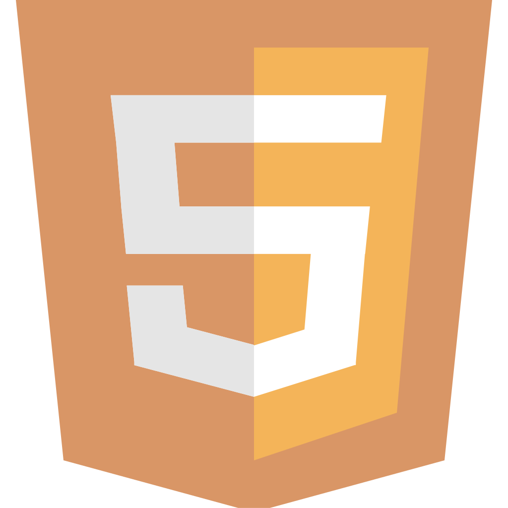
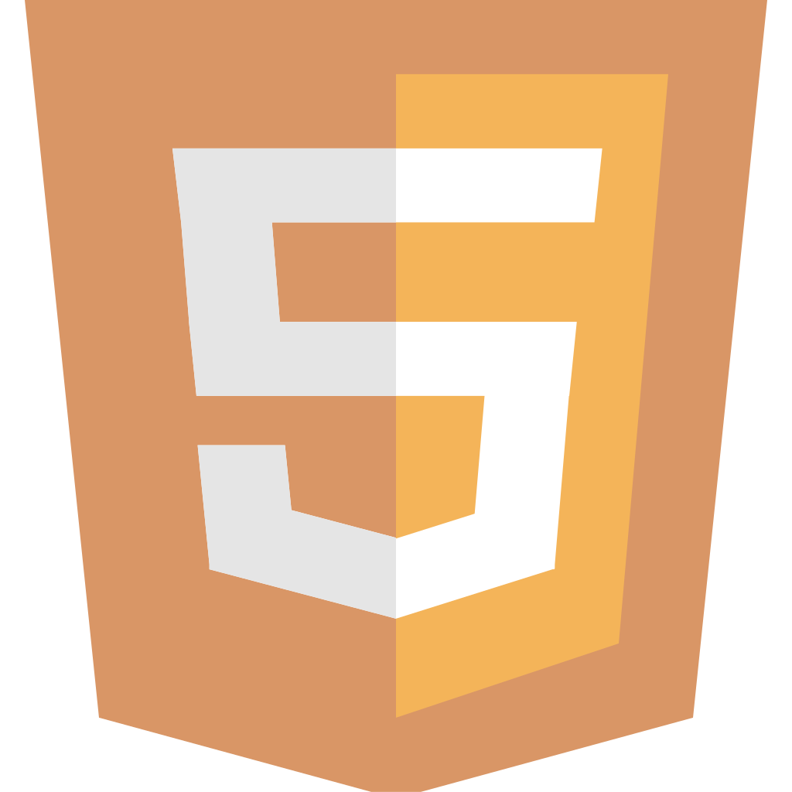

Mi perfil

¡Hola! Soy Daniela Forero Ballén, soy una programadora dedicada al aprendizaje constante, adquiriendo conocimientos que me permitan abordar de manera creativa los desafíos que surgen en el ámbito del desarrollo de software.
Mi Competencias
- Empatía
- Creatividad
- Adaptabilidad
- Trabajo en equipo
- Organización
Mis Habilidades técnicas
Información adicional
Además de mis habilidades en el campo del desarrollo de software, practico durante mi tiempo libre el arte e ilustración, reforzando mi capacidad de hacer que nuevas ideas cobren vida.
Mis objetivos Profesionales
Conseguir experiencia laboral a partir de la participación en diversos proyectos de desarrollo de software.
Continuar mis estudios sin afectar los proyectos en los que me encuentre trabajando.
Ser de apoyo para la evolución de empresas por medio de mi participación activa
Misión
Mi objetivo profesional es ofrecer mis habilidades y talentos, siendo parte de la evolución constante de la tecnología.
Visión
Enriquecer mis conocimientos a un nivel superior por medio de la experiencia laboral y el trabajo en equipo. Y así, brindar soluciones creativas e innovadoras.
Valores
| Creatividad | Respeto |
| Empatía | Amabilidad |
| Igualdad | Aprendizaje |
Certificaciones
Certificación de Inglés: B2
Me certifiqué por medio de la prueba TOELF Junior en Octubre del año 2023, realizada en la institución educativa: Nuestra Señora del Rosario de Floridablanca.
Servicios
Ofrezco mis habilidades de desarrollo de Software junto a mis habilidades suaves para un entorno laboral, con mi experiencia en trabajo en equipo y mi determinación en comunicar mis ideas de manera asertiva para obtener resultados óptimos.
Proyectos
Proyecto SpaceX
Realizado en Campuslands en Mayo del año 2024. Desarrollo de FrontEnd para vista de información de lectura de SpaceX API usando HTML, CSS y JavaScript.
En este proyecto tuve la oportunidad de trabajar con uno de mis compañeros para alcanzar resultados satisfactorios.
Para acceder al repositorio de este trabajo, dirijase al repositorio PROYECTO-FILTRO_JS_FORERODANIELA-GUTIERREZRONALD
Proyecto Kario Media
Realizado en Campuslands en Marzo del año 2024. Desarrollo de FrontEnd para una plataforma web de consulta usando HTML y CSS.
En este proyecto tuve la oportunidad de trabajar con otro de mis compañeros, entregando un producto agradable y de acuerdo con los requisitos solicitados.
Para acceder al repositorio de este trabajo, dirijase al repositorio PROYECTO-FILTRO_FORERODANIELA_LOPEZOLIVER
Proyecto Campuslands
Realizado en Campuslands en Febrero del año 2024. Desarrollo de BackEnd para el sistema de administración de una institución de formación con Python. Se realizó con una compañera.
En este proyecto, pude trabajar por primera vez con una de mis compañeras, logrando un aplicativo final con funcionalidades según la petición del cliente.
Para acceder al repositorio de este trabajo, dirijase al repositorio Proyecto_Python_ForeroDaniela-MulfordCatalina